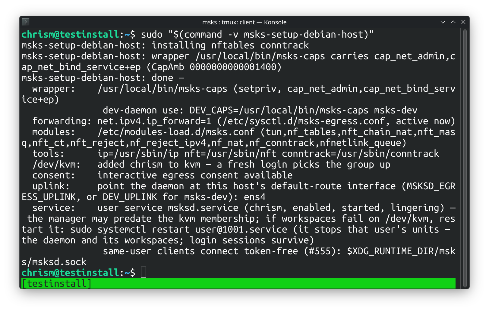

Installation¶
msks ships as a Python distribution with everything inside: the client
(msks), the daemon (msksd), the consent-decider terminal
(msks-term-popup), and the host setup tools this chapter describes
(msks-setup-debian-host, msks-setup-fedora-host, and
msks-setup-macos-host).
The wheel needs Python 3.14 or newer. A stock Debian or Fedora host
holds no 3.14, so the installer provisions its own interpreter (see
below). The script needs curl and tar on the host. Beyond that,
nothing needs installing first.
The one-command install¶
Every release carries two bootstrap scripts, one per platform family. The script is the whole installer: it fetches the release's artifacts, verifies them, and runs the platform setup tool.
Debian-derived hosts (Debian, Ubuntu 24.04 or newer, Linux Mint 22 or newer):
Fedora-derived hosts:
Run the command as the user the daemon will serve. That account is the
executing user throughout (the SUDO_USER under sudo): the msks
group grant, the kvm membership, and the login PATH block all land
on it.
What the script does, in order:
- It downloads the release's checksum record (
SHASUMS) and the platform wheel. Every artifact it fetches is verified against the record before use, and a checksum mismatch stops the install. - It downloads Cloud Hypervisor's static release binary, verified the
same way, and installs it at
/usr/local/bin/cloud-hypervisor. Acloud-hypervisoralready on PATH stays untouched. - It provisions
uvwhen the host holds none, then a uv-managed Python 3.14 under/opt/msks/python. - It builds a throwaway venv from the verified wheel and runs the
platform setup tool from it as root, passing the verified wheel
along. The throwaway venv is discarded when the tool exits. The
tool lands the real install,
/opt/msks/venv, from those exact bytes.
The trust profile is unchanged: shipped code over TLS plus pinned checksums, and nothing stronger. The by-hand chapter spells out every step.
Flags after -s -- reach the tool:
curl -LsSf https://github.com/mcdonc/msks/releases/latest/download/msks-setup-debian.sh | sudo sh -s -- --no-service
--wheel <path> installs a wheel in hand: only the wheel fetch is
skipped (the checksum record still downloads, for the VMM and uv
pins). --uninstall reverses the install (see Uninstalling
msks).
The three download bases answer to environment overrides for mirrors:
MSKS_RELEASE_URL, MSKS_VMM_URL, and MSKS_UV_URL.
The run is idempotent: re-run any time. Re-run after a util-linux
upgrade too (the wrapper keeps a copy of setpriv; see below).

You will need to log out and back in for msksd doctor to return
clean after the run.
What the setup lands¶
Each phase runs in order, and the first refusal stops the run with an error. On Apple Silicon, everything except the msks client is installed into a Lima virtual machine.
The shared venv. /opt/msks/venv holds the msks release matching
the tool's own version, and every later phase resolves against it: the
unit's ExecStart, the /usr/local/bin client links, and a second
user's bare msks all reach the same install. The venv runs on a
standalone CPython 3.14 provisioned by uv at /opt/msks/python (the
host needs no Python of its own). The run installs the release from
PyPI, or the wheel --wheel named. A wheel whose version disagrees
with the tool's refuses. A re-run with the same release and no
--wheel installs nothing, and a re-run with a newer tool refreshes
the wheel: that re-run is the upgrade story. Every file lands
world-readable, so the msksd account can traverse the whole chain.
Packages. The packages required by the server and the client.
The capability wrapper. /usr/local/bin/msks-caps is a
root-owned copy of util-linux setpriv carrying file capabilities
cap_net_admin and cap_net_bind_service. The daemon's per-VM taps
and nftables chains need net_admin. The egress stack's DHCP (port 67) and DNS (port 53) need net_bind_service. The wrapper raises both
caps ambient, so they flow to the daemon and every tool it execs. The
systemd unit grants the daemon its caps natively, so the wrapper
serves the dev daemon alone (see Development
environment). It lands root:msks mode 0750,
executable by root and the msks group's members. After installing it
the setup runs the wrapper and verifies the caps.
The routing kernel. /etc/sysctl.d/msks-egress.conf sets
net.ipv4.ip_forward=1 at boot, and the value applies immediately:
route packets between the per-VM taps and the host uplink. The daemon
reads the sysctl at startup and refuses every egress workspace, with
the cause stated, while it reads 0. /etc/modules-load.d/msks.conf
loads the netfilter and tun modules at boot: the nftables machinery,
NAT, conntrack, the deny RST, and the interactive consent queue. A
module the kernel tree lacks draws a warning that states the kernel
package carrying it. Interactive egress consent needs its whole module
set, and the run's summary reports the verdict.
/dev/kvm. Access arrives through the kvm group. The daemon's
system unit carries SupplementaryGroups=msks kvm, so the daemon
account reaches the node through the unit itself. The setup also adds
the executing user to the group when missing, for hand-run daemons
(msks-dev, a bare msksd). The account picks the group up at the
next login. An already-running session keeps the old groups until it
starts anew.
The login PATH. The account that typed the command gains
/usr/sbin and /sbin on its login PATH: the setup appends a guarded
block to that account's ~/.profile, idempotently, so a re-run never
duplicates it. Debian keeps nft, conntrack, and the e2fsprogs trio
in /usr/sbin, and a non-root login shell does not carry the
directory. The block means the operator's next login can type the
names the daemon execs. A daemon under the system unit finds the
directories on its own PATH (the system manager's default carries
them). A daemon started by hand inherits the session's PATH, so the
same login carries the fix to both shapes.
The accounts and the shared socket. The setup creates the msksd
system account: nologin, with /var/lib/msksd as its home. That
directory is the daemon's state directory: the unit's
StateDirectory creates it, and its MSKSD_STATE_DIR line points the
daemon at it. The setup also creates the msks access group.
Membership in msks is the deliberate grant that gates the shared
socket: the daemon binds /run/msks/msksd.sock and hands it to the
group, and a member connects with no token and no CA. The setup grants
the executing user the membership, so the single-user workstation
needs no further step. The membership applies at the next login.
The systemd system service. On a host systemd manages, the setup
writes /etc/systemd/system/msksd.service and enables it. The unit
runs the daemon under the msksd account with
SupplementaryGroups=msks kvm, and its ExecStart is the venv's
msksd (/opt/msks/venv/bin/msksd). AmbientCapabilities and
CapabilityBoundingSet carry cap_net_admin and
cap_net_bind_service natively, so no wrapper and no setuid path is
involved. The unit points the daemon at the shared socket
(MSKSD_SOCKET=/run/msks/msksd.sock, handed to the msks group) and
runs with MSKSD_EGRESS_ENABLED=true and the uplink interface the
setup detected. It restarts the daemon on failure, and it starts at
boot with no login. Before the unit lands, the setup verifies the
resolved msksd binary is readable and executable by the msksd
account. A venv behind a permission the account cannot cross (a 0700
home) refuses at install time with the cause stated.
Cloud Hypervisor's static release binary. So guest VMs can be started. The bootstrap script lands it verified. The tool performs its own download only when nothing carries the binary.
The client links. /usr/local/bin/msks and
/usr/local/bin/msks-term-popup are symlinks into the venv's bin
(/opt/msks/venv/bin). Every login shell carries /usr/local/bin,
so a bare msks answers for every user on the host with no profile
edits. A GUI-opened terminal window resolves the consent-terminal
launcher on its own PATH. A regular file or a live link to another
target at a path refuses by name: the run never clobbers what it did
not land. A dangling link re-points, stale by definition. --uninstall
removes both.
The owner-exec helper. The platform wheel bundles the
virtiofsd-as binary inside the package, so the venv carries it. A
cross-owner share execs its virtiofsd through the helper as the
workspace's owner. The helper needs an install as root:msksd, mode
4750, to serve that. The NixOS host performs the install through
security.wrappers. The setup tools' install is
part of #1080's remaining work. The mounts chapter
documents the helper's contract.
The run ends with a summary: the venv, the wrapper and its caps, the
account line, the sysctl, the modules file, the tools' paths,
/dev/kvm, the login PATH block, the client links, the consent
verdict, the detected uplink, and the service line.
Setup on a Debian host¶
The platform gate accepts the debian, ubuntu, and linuxmint
os-release IDs with those release floors. Older Ubuntu and Mint
archives lack virtiofsd, which the setup requires.
One version caveat: host mounts need virtiofsd 1.13.0 or newer, and
Linux Mint 22's archive ships 1.10.0. msksd doctor gives the gap,
and the workaround is a self-built virtiofsd pointed at with
MSKSD_VIRTIOFSD (see mounts).
Setup on a Fedora host¶
The Fedora tool runs the same phases over its own package map and
verbs. The run installs through dnf the packages a stock Fedora
answers without: conntrack-tools, qemu-img, tmux, virtiofsd,
and the consent stack's libnetfilter_queue when the linker cache
lacks the soname. A stock install already carries the rest of the
probed set (setpriv, setcap, ip, nft, modprobe, sysctl,
the e2fsprogs trio, mkisofs, ssh, and rsync), so those probes
read present and the run moves on. The CA probe runs Fedora's own
command, update-ca-trust (the ca-certificates package), where the
Debian map probes update-ca-certificates.
The group commands run through usermod -aG and gpasswd -d, and
the uninstall summary's removal line is dnf's.
The same pieces land at the same paths for the same reasons the
inventory above documents. --uninstall reverses the run the same
way.
The same install by hand¶
The bootstrap script is a release asset, and running it means running shipped code as root. An operator who prefers to read every step first can run the same steps in an interactive root shell. The steps below are the script's, spelled out. The platform tool at the end is the same shipped code the script runs.
The example is Debian on x86-64. Fedora takes the Fedora tool's name
(msks-setup-fedora-host). An aarch64 host takes the
manylinux_2_17_aarch64 wheel, the -aarch64 VMM asset, and the
aarch64 uv tarball.
Fetch the artifacts and verify them against the release's checksum record:
base=https://github.com/mcdonc/msks/releases/latest/download
curl -LsSf -o SHASUMS "$base/SHASUMS"
grep -E 'msks-.*manylinux_2_17_x86_64\.whl$' SHASUMS
The grep prints the wheel line (its filename carries the version).
Take the wheel and the VMM binary beside the record, then verify
them against it. The record pins the VMM release by checksum
(v54.0 when this was written): take the asset from that release's
own URL, not latest, or the bytes drift from the record the day
upstream cuts a newer one:
curl -LsSf -o msks-<version>-py3-none-manylinux_2_17_x86_64.whl \
"$base/msks-<version>-py3-none-manylinux_2_17_x86_64.whl"
curl -LsSf -o cloud-hypervisor-static \
https://github.com/cloud-hypervisor/cloud-hypervisor/releases/download/v54.0/cloud-hypervisor-static
sha256sum -c SHASUMS --ignore-missing
A host without ca-certificates fails the TLS verification above
(apt install ca-certificates). A checksum mismatch is a stop, not a
warning.
Install the VMM binary. The tool leaves a present binary alone, so this step keeps the tool's own unverified download from firing:
install -m 0755 cloud-hypervisor-static /usr/local/bin/cloud-hypervisor
/usr/local/bin/cloud-hypervisor --version
Provision uv (skip this block when the host holds a uv on PATH,
and use uv in place of /tmp/uv/uv below). The checksum record
pins the uv tarball the same way (0.9.7 when this was written):
fetch that tarball, not the astral installer, which puts its uv
outside the login PATH a root shell carries:
curl -LsSf -o uv-x86_64-unknown-linux-gnu.tar.gz \
https://github.com/astral-sh/uv/releases/download/0.9.7/uv-x86_64-unknown-linux-gnu.tar.gz
sha256sum -c SHASUMS --ignore-missing
mkdir -p /tmp/uv
tar -xzf uv-x86_64-unknown-linux-gnu.tar.gz -C /tmp/uv --strip-components=1
/tmp/uv/uv --version
Then the interpreter and the throwaway venv for the tool. The
interpreter parks under /opt/msks/python, the same directory the
tool's venv phase provisions into: the throwaway and the real install
share one interpreter and one download, and the interpreter survives
the throwaway:
export UV_PYTHON_INSTALL_DIR=/opt/msks/python
export UV_PYTHON_PREFERENCE=only-managed
mkdir -p /opt/msks
chmod 0755 /opt/msks
umask 022
/tmp/uv/uv venv --python 3.14 /tmp/msks-tool
/tmp/uv/uv pip install --python /tmp/msks-tool/bin/python \
./msks-<version>-py3-none-manylinux_2_17_x86_64.whl
Run the tool from the throwaway, passing the wheel in hand so the
install under /opt/msks/venv holds the exact bytes verified above:
/tmp/msks-tool/bin/msks-setup-debian-host \
--wheel ./msks-<version>-py3-none-manylinux_2_17_x86_64.whl
rm -rf /tmp/msks-tool
The tool's own phases are the inventory above: the venv, the packages, the accounts, the wrapper, the kernel settings, the unit, the client links. What each phase lands stays in the what the setup lands section.
macOS on Apple Silicon hosts¶
The macOS install keeps its user-run shape: the daemon already runs
inside a Lima VM with vz as the host boundary, so it holds no host
privilege to tighten. msks-setup-macos-host installs the Lima
virtual machine system (via Brew), and runs msksd within a Lima VM.
The msks client runs on the Mac itself. The installer is expected to
work on M3 and newer Macs (it refuses older Apple Silicon hosts by
name).
Install uv (from Brew or astral.sh),
then run the tool through it. The tool provisions its own Python 3.14:
The tool creates /opt/msks through one sudo step (/opt is
root-owned ground on macOS) and lands the shared host install there:
/opt/msks/venv with the msks release matching the tool's version,
and the uv-managed 3.14 beside it. The brew-prefix client links
point into that venv, so every account's bare msks resolves the
same shared install. --wheel <path> (a wheel in hand) and
--uninstall carry the Linux tools' vocabulary.
The dictation prerequisites land with the run (#1216). The GUI's
dictate pill calls pw-record, pw-cat, and notify-send. A stock
Mac carries none of the three. The tool brews the two engines the Mac
can hold: whisper.cpp provides whisper-cli, and ffmpeg captures.
It then lands three shims at the brew prefix's bin, beside the client
links. pw-record captures through ffmpeg's avfoundation,
pw-cat plays through afplay, and notify-send shows the
notification through osascript. Each shim carries the tool's
sentinel. A foreign file at a shim path refuses by name, and the
uninstall arm removes only the tool's own shims. The brew packages
stay on uninstall, the Linux tools' rule for shared packages.
The first recording asks macOS for the microphone. The prompt shows
the name of the terminal that launched the GUI, and the grant lands
in Privacy & Security. The capture device is the desktop's default
input. The Device setting in the GUI selects another one by its
avfoundation index, and ffmpeg -f avfoundation -list_devices true -i
"" lists the indexes. PW_RECORD_AUDIO_INDEX overrides the setting
for one launch.
The msksd VM that msks-setup-macos-host creates from the shipped
Lima template is the host that shares Mac folders into workspaces.
The VM mounts them under its reserved prefix and forwards each
attached share to the workspace that asked for it; see the mounts
chapter's macOS section.
Sizing the msksd Lima VM¶
The VM starts at the template's sizing — 4 CPUs, 8 GiB of memory, a 60 GiB disk — and the sizing flags change it at creation and on every re-run:
A changed value stops the VM, edits its instance, and starts it again:
running workspaces stop with the VM, and each starts again with
msks start. Equal values change nothing, so the command is safe to
re-run in scripts. The disk only grows: a smaller value refuses,
stating both sizes. Reclaim space with msks storage instead. The
disk is sparse, so it fills on demand up to the size you set. The
floors are 2 CPUs, 4 GiB of memory, and 20 GiB of disk: the VM must
hold the daemon and a workspace.
When the VM's disk runs low, the daemon's storage warning and the 507 refusal point at the same grow command. The fix is one re-run away.
Linux on Mac Hardware¶
It doesn't work on Asahi. An Apple Silicon host whose kernel runs KVM in NV mode does not yet deliver guest interrupts (#649): a workspace starts and its kernel boots deep into first boot, then stalls before ssh answers.
Uninstalling msks¶
The bootstrap script reaches the tool's uninstall arm:
curl -LsSf https://github.com/mcdonc/msks/releases/latest/download/msks-setup-debian.sh | sudo sh -s -- --uninstall
The uninstall reverses the run. It stops and disables the msksd
system service and removes its unit file and its enablement symlink.
The stop lets the daemon finish its shutdown cycle, workspaces
included. It removes the msksd account and the msks group (the
executing user's grant leaves with them, and the summary prints the
restore line: adduser on Debian, usermod -aG on Fedora). It
removes the whole /opt/msks
tree: the venv, the provisioned Python, the bootstrap uv, the bundled
owner-exec helper, and the client links that pointed into it. It
removes the two /etc
files the run landed, and removes the capability wrapper. It takes
the executing user out of the kvm group (the tool keeps no record
of which run added a membership, so any member leaves). It strips the
PATH block from ~/.profile and removes the cloud-hypervisor binary.
Kernel modules already loaded stay loaded until the next reboot.
/var/lib/msksd stays: the VM overlays, images, and secrets there
survive the uninstall by design. The summary prints the kept
directory and its size. Removing the directory itself stays a by-hand
act:
A reinstall creates the msksd account again with the next free
system uid. When that uid differs from the one that owned the kept
tree, repair the ownership before the daemon starts
(chown -R msksd:msksd /var/lib/msksd). The uninstall summary prints
the same
command.
After the sysctl file leaves, sysctl --system re-applies every
remaining sysctl.d file, the same set a boot applies. A second owner
that wrote its own forwarding file keeps its setting. A live-only
forwarder the tool never saw keeps its value too. On a host where no
remaining file sets net.ipv4.ip_forward, the live value the setup
run set stays on until the next reboot. The summary prints
sysctl -w net.ipv4.ip_forward=0 for the operator who wants it off
immediately.
The packages the run installed stay installed: they are shared
packages, and other software on the host may use them. The uninstall
summary prints the ones whose probes answer present, with a
copy-paste apt-get remove --purge ... line. You can remove the ones
nothing else needs yourself.
The uninstall run is idempotent the same way: a piece already gone is
a line in the summary, not an error. The first real refusal stops the
run (the setup run's rule). --no-service holds its meaning: the
unit is left alone, every other piece still leaves.
The clean cut for an existing install¶
An install from the user-unit era holds its state under a user's home
(~/.local/state/msksd). The system-unit install does not read that
directory: it holds its state under /var/lib/msksd. Stop and remove
the old unit, remove the old tool install, and run the one command.
The home state directory stays behind. Remove it yourself when
nothing needs it. The state directory does not move.
The host doctor¶
The host doctor chapter documents the msksd doctor
command that can diagnose installation issues.
The alternative paths¶
A development host (this repository's checkout) runs the daemon through Nix and devenv. The Development environment chapter owns that path. A Mac developing from a checkout has its own chapter: Developing on a macOS host.